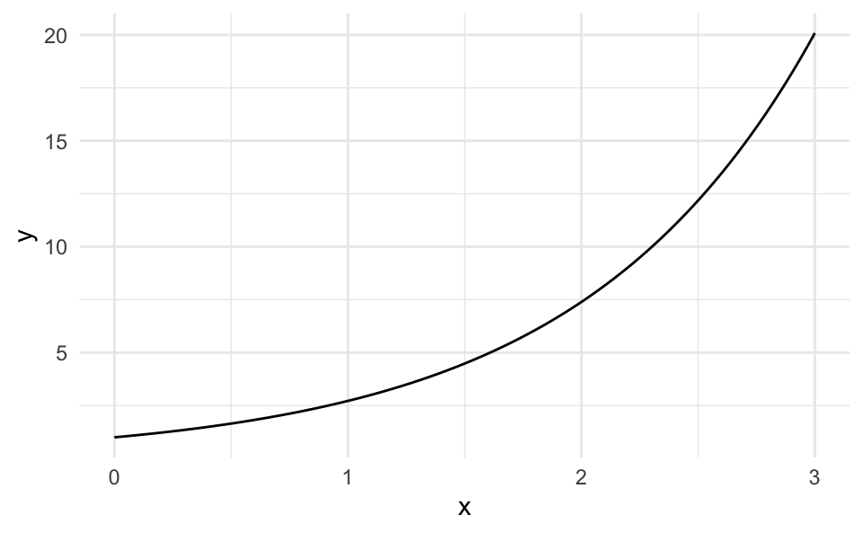
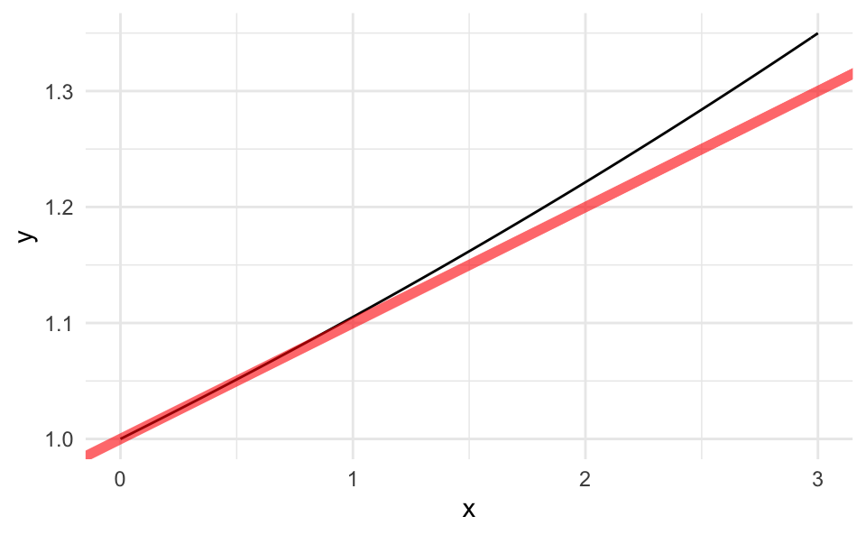
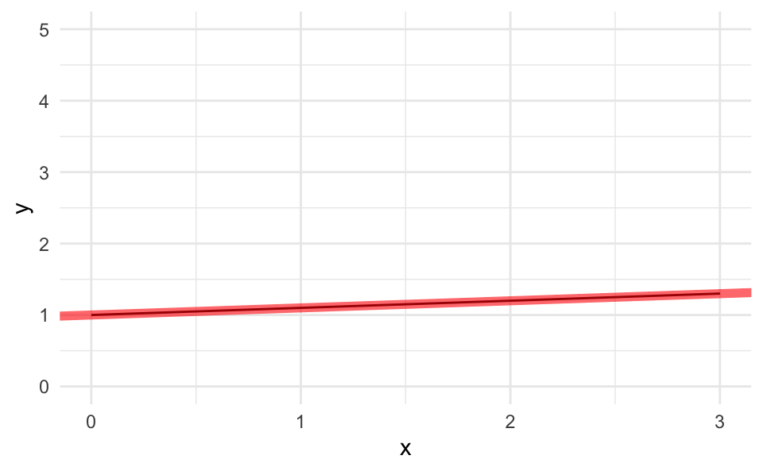
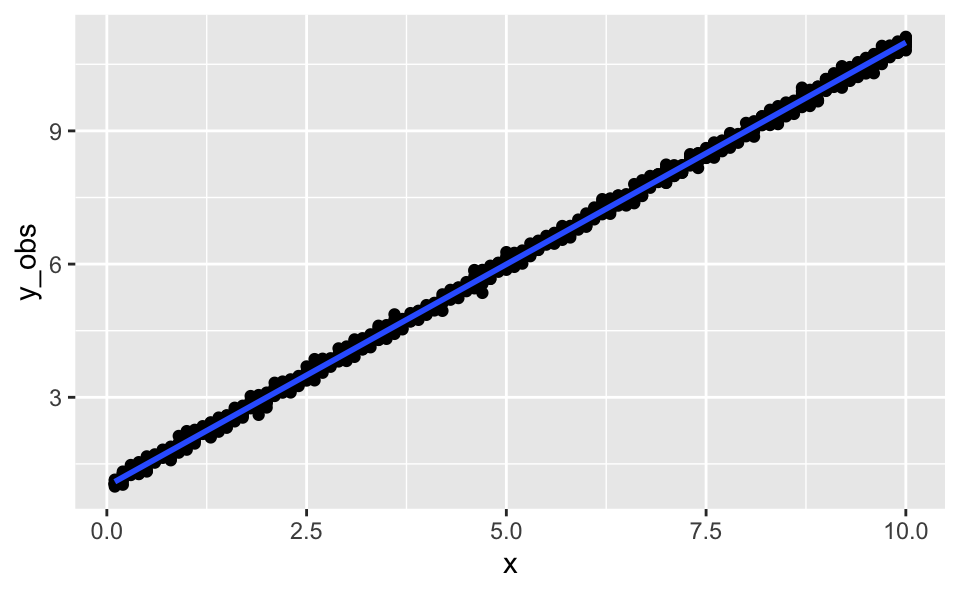
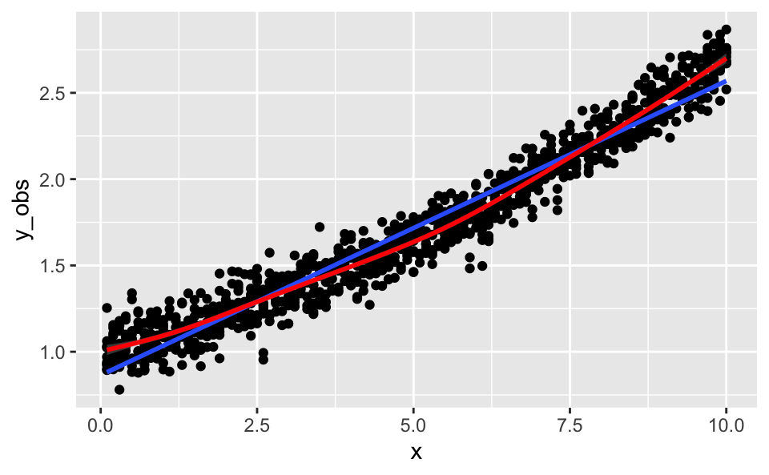
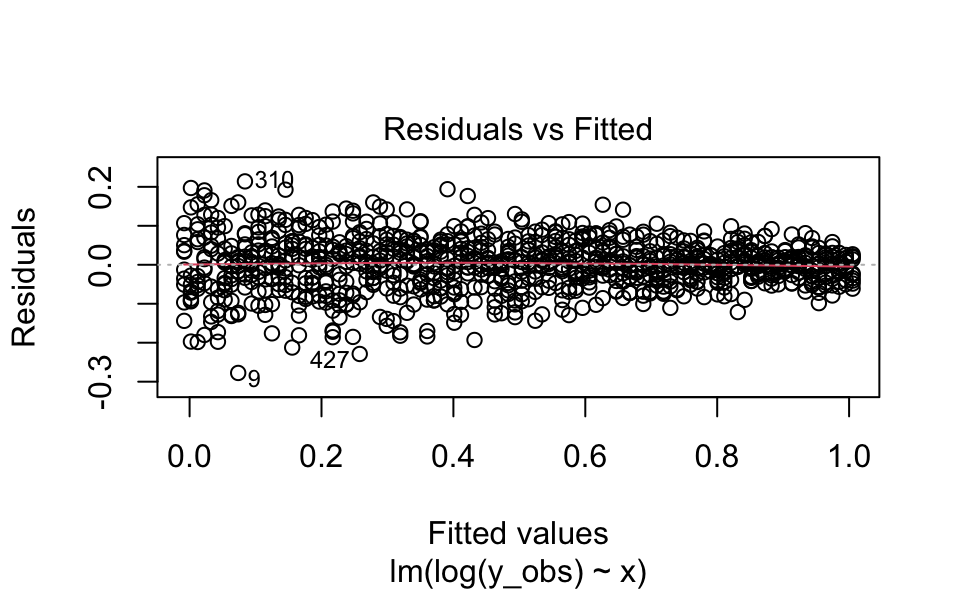
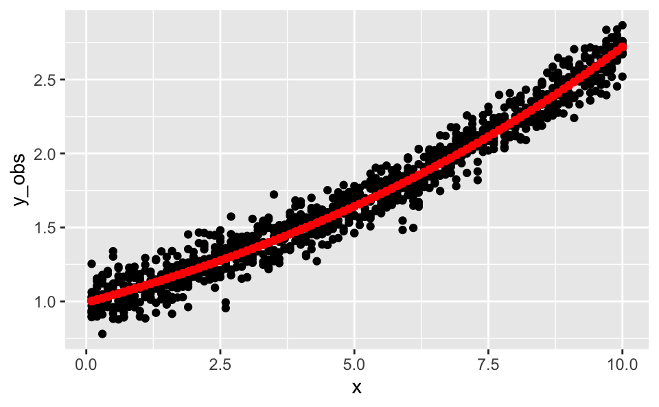
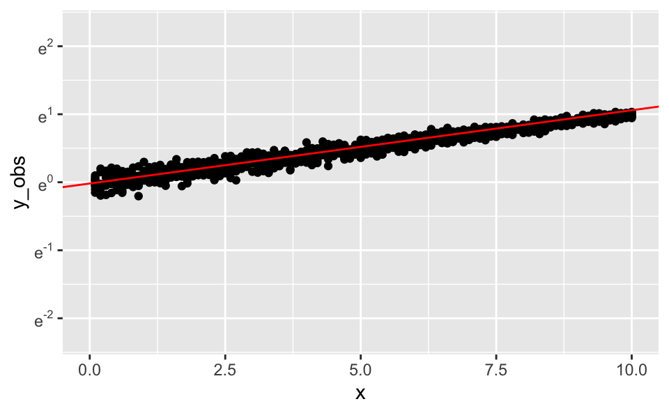

library(tidyverse)
library(scales)Exponential growth, that is something that is growing relative to its science, hence ubuiquitious in nature, is conveniently and elegantly described by the growth constant \(e\):
\[y = e^{\lambda x}\]
And its graph is this for \(\lambda=1\):
p0 <- ggplot(data.frame(x = seq(from = 0,
to = 3,
by = .1))) +
aes(x = x) +
theme_minimal()
p0 +
stat_function(fun = ~ exp(.x))
exp(x) does nothing more than computing \(e^x\), where \(e \approx 2.7182...\).
e <- exp(1)
e## [1] 2.718282The exponential function can also be used to mirror or approximate a linear function with a constant \(\lambda\), which may sound weird, but it is possible for at least some range of the linear function:
\[y = exp(0.1 * x)\]
p0 +
stat_function(fun = ~ exp(0.1 * .x)) +
scale_x_continuous(limits = c(0, 3)) +
geom_abline(slope = 0.1,
intercept = 1,
color = "red",
alpha = .6,
size = 2)
For some limited range we can closely approximate the exponential function.
We can make use of the following equality:
\[x = e^{(\text{ln} x)}\]
Assume the linear function to be approximated is
\[y = 0.1\cdot x + 1\]
Then we have:
\[y = e^{\text{ln}(0.1x + 1)}.\]
In R:
f <- function(x) exp(log(0.1*x + 1))For example:
x <- c(-3:10)
f(x)## [1] 0.7 0.8 0.9 1.0 1.1 1.2 1.3 1.4 1.5 1.6 1.7 1.8 1.9 2.0We need to remember that negative numbers are not defined for the log.
As a diagram:
p0 +
stat_function(fun = f) +
scale_x_continuous(limits = c(0, 3)) +
geom_abline(slope = 0.1,
intercept = 1,
color = "red",
alpha = .6,
size = 2) +
scale_y_continuous(limits = c(0, 5))
It is not neccessarily an disadvantage that we cannot model/mirror negative x values using this approach as growth processes only feature positive values.
Here’s a simple linear model, \(y \sim x+1\).
d <-
tibble(
x = rep(seq(from = 0.1, to = 10, by = .1), 10),
e = rnorm(n = length(x), sd = .1), # error term
y = x + 1,
y_obs = y + e)Plot it:
ggplot(d) +
aes(x = x, y = y_obs) +
geom_point() +
geom_smooth(method = "lm")
In contrast, consider this exponential function:
d <-
tibble(
x = rep(seq(from = 0.1, to = 10, by = .1), 10),
err = rnorm(n = length(x), sd = .1), # error term
y = exp(0.1*x),
y_obs = y + err)Plot it:
ggplot(d) +
aes(x = x, y = y_obs) +
geom_point() +
geom_smooth(method = "lm") +
geom_smooth(color = "red") +
labs(caption = "blue: linear model, red: LOESS smooth")
lm()We know that \(log(y) = x\) describes an exponential model, because if we de-log both sides of the equations we obtain:
\[y = e^x \qquad.\]
lm1 <- lm(log(y_obs) ~ x, data = d )
summary(lm1)##
## Call:
## lm(formula = log(y_obs) ~ x, data = d)
##
## Residuals:
## Min 1Q Median 3Q Max
## -0.27759 -0.03704 0.00230 0.03802 0.21401
##
## Coefficients:
## Estimate Std. Error t value Pr(>|t|)
## (Intercept) -0.0184587 0.0041928 -4.402 1.19e-05 ***
## x 0.1023805 0.0007208 142.036 < 2e-16 ***
## ---
## Signif. codes: 0 '***' 0.001 '**' 0.01 '*' 0.05 '.' 0.1 ' ' 1
##
## Residual standard error: 0.0658 on 998 degrees of freedom
## Multiple R-squared: 0.9529, Adjusted R-squared: 0.9528
## F-statistic: 2.017e+04 on 1 and 998 DF, p-value: < 2.2e-16If we delog. the slope coefficient:
exp(coef(lm1)[2])## x
## 1.107805That is, we found a growth rate of approx. 11 percentage points.
plot(lm1, which = 1)
The residual plot tells us that our linear approximation is not too bad.
Let’s plot it using a y scale in the raw data (delogged).
d <-
d %>%
mutate(y_pred = exp(predict(lm1)))ggplot(d) +
aes(x = x) +
geom_point(aes(y = y_obs)) +
geom_point(aes(y = y_pred), color = "red") +
labs(caption = "red: predicted values, black: observed values")
As identified by the model diagnostics, the fit is, despite the seemingly high \(R^2\) not too good.
Let’s plot the model with a log-y-axis.
ggplot(d) +
aes(x = x) +
geom_point(aes(y = y_obs)) +
scale_y_continuous(trans = "log",
limits = c(0.1, 10),
breaks=trans_breaks('log', function(x) e^x),
labels=trans_format('log', math_format(e^.x))
) +
scale_x_continuous(limits = c(0, 10)) +
geom_abline(slope = exp(coef(lm1)[2])-1,
intercept = exp(coef(lm1)[1]),
color = "red")
Note that the y axis is scaled in powers of \(e\).
This post profited from some remarks of Norman Markgraf.